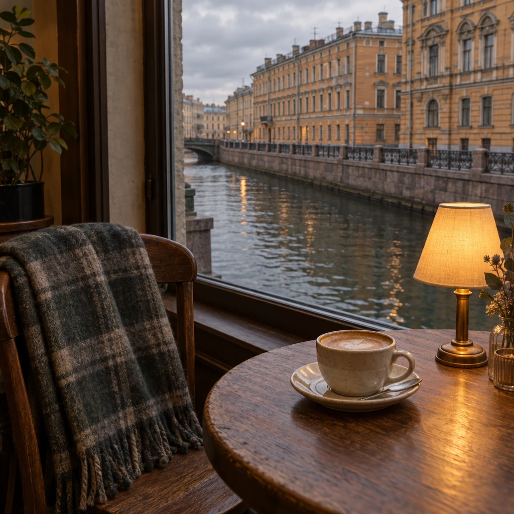
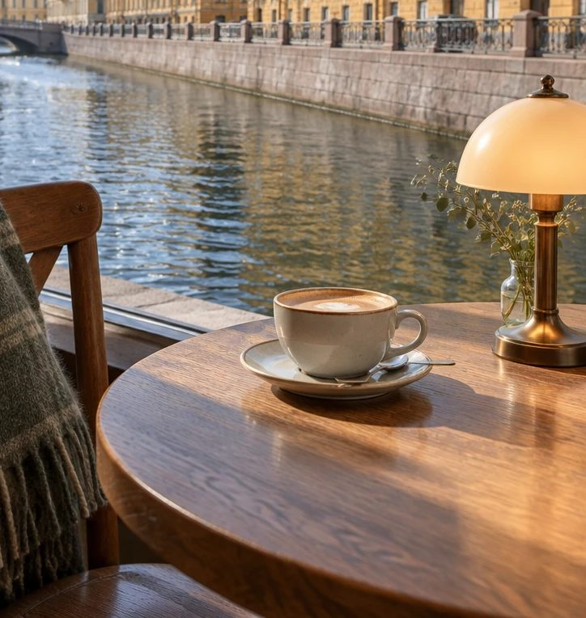
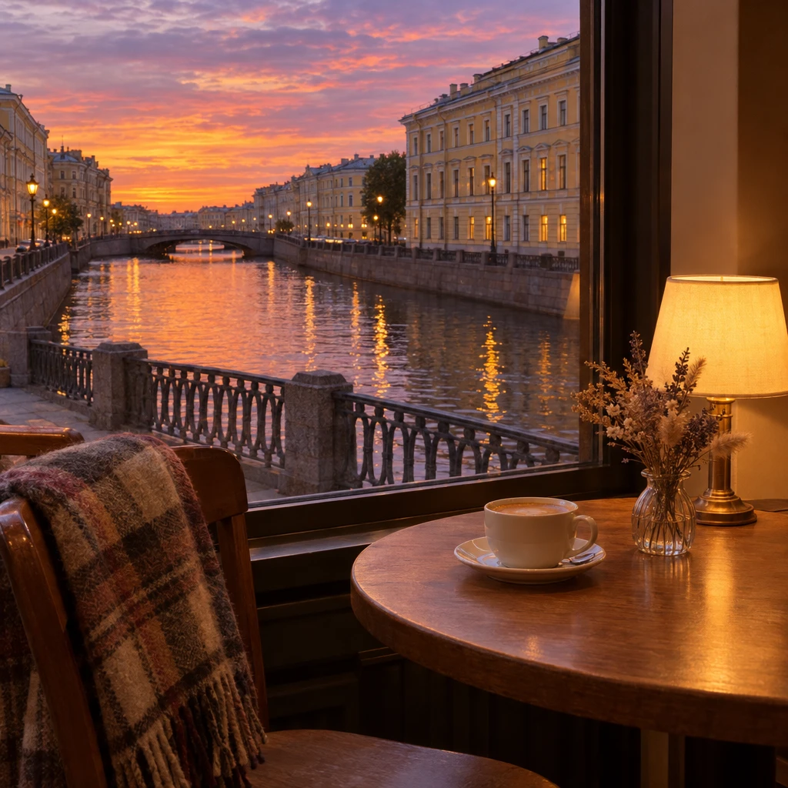
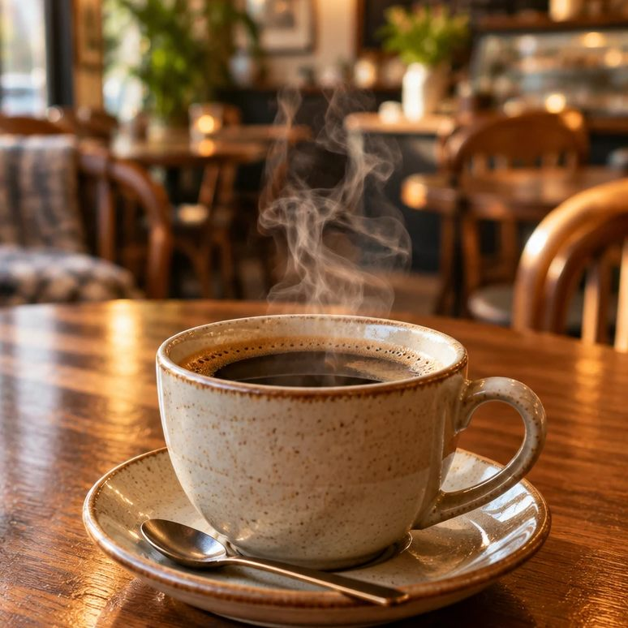
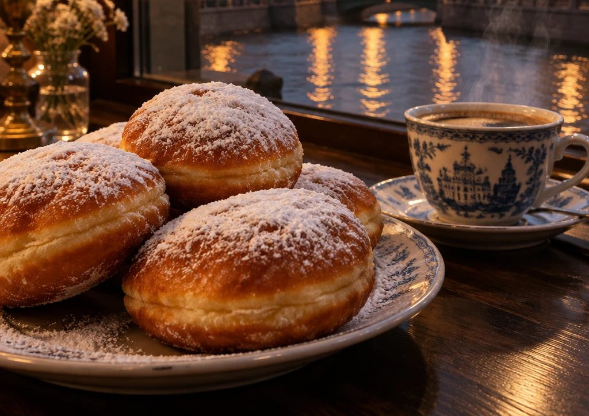

Кофе у окна с видом на воду
Кафе «Окно на воду» на канале Грибоедова в Санкт-Петербурге. Кофе, горячая еда и пышки. Пледы на стульях, а за стеклом вода.
Набережная канала Грибоедова, 57. Ежедневно с 9:00 до 22:00.




Вечер на канале. Зажгли лампы, за окном сумерки.
Показано время на ваших часах.
Здесь не торопят
Мы устроили кафе в первом этаже старого дома. Окна большие, до самого пола, и воду видно почти из любого места зала.

- Столики у окна
- Их шесть, прямо у стекла, с видом на воду и мост. Остальные стоят вторым рядом: воду видно, но чуть дальше. Хотите именно у окна, бронируйте заранее.
- Пледы
- На стульях лежат шерстяные пледы, особенно пригодятся осенью и в сырую погоду.
- Книги и лампы
- На полке у стены книги, которые можно читать на месте. По вечерам на столиках зажигаем лампы.
- Веранда у воды
- С мая по сентябрь выставляем столики на набережную.
Кто сидит у окна
«Зашла переждать дождь, а просидела два часа. Плед, чай с малиновым вареньем и вода за окном. Теперь прихожу по воскресеньям».
Мария
«Бронировали столик у окна на годовщину. Подтвердили быстро, стол держали. Вечером на канале зажгли фонари, и все вышло красиво».
Антон
«Люблю, что можно прийти с книгой и никто не торопит. Пышки тёплые, не масляные».
Елена
«Работаю тут по утрам: розетка у окна, фильтр-кофе и тихо. Вид на воду помогает думать».
Павел
Питерское и вкусное
- Пышки
- Жарим их каждое утро. Подаём тёплыми, с сахарной пудрой, как в старых пышечных. Четыре штуки за 240.
- Кофе
- Берём зерно у небольшой обжарки и обновляем его каждые две недели. Варим эспрессо, фильтр и молочные напитки.
- Чай с вареньем
- Малиновое и брусничное варим сами. Чай приносим в чайнике, вместе с вареньем в розетке.
- Суп дня
- Каждый день новый. Что сегодня, подскажем на кассе или по телефону.

Как нас найти
Санкт-Петербург, набережная канала Грибоедова, 57. Вход с набережной, рядом с мостом, над дверью вывеска с синим кругом.
- Часы работы
- Ежедневно с 9:00 до 22:00. Завтраки с 9:00 до 12:00.
- Как добраться
- Пять минут пешком от метро «Садовая». Рядом можно оставить велосипед.
- На карте
- Открыть в Яндекс Картах
- Телефон
- +7 000 000-00-00
Забронируйте столик у окна
Частые вопросы
Во сколько вы открываетесь?
Ежедневно с 9:00 до 22:00. Завтраки подаём с 9:00 до 12:00.
Можно ли забронировать столик у окна?
Да, оставьте заявку на сайте или позвоните. Таких столиков шесть, поэтому лучше заранее, особенно на вечер и выходные.
Нужна ли бронь и предоплата?
Приходите и без брони, посадим где свободно. В выходные вечером мест может не быть. Предоплата не нужна. Если планы изменились, позвоните или напишите хотя бы за час.
Что делать, если нас больше шести?
Позвоните, составим столы вместе.
Можно ли прийти с ребёнком или с собакой?
С ребёнком можно, есть детские стульчики. С собаками можно на веранде, пока она работает, с мая по сентябрь.
Работает ли веранда зимой?
Нет, веранда у воды работает с мая по сентябрь. Зимой все столики внутри, у окон.
Есть ли wi-fi и розетки?
Wi-fi бесплатный. Розетки у столиков у окна.
Есть ли блюда без молока и без глютена?
Напитки можно приготовить на овсяном или миндальном молоке. Безглютеновых блюд сейчас нет. Подскажем на кассе, что подойдёт. Хотите знать состав заранее, позвоните.
Можно ли платить картой?
Да, картой и наличными.
Сколько обычно выходит на человека?
Кофе с пышками выходит около 500 рублей, с горячим блюдом около 900.
Как к вам добраться?
Мы на набережной канала Грибоедова, рядом с мостом. Подробности в блоке «Как нас найти».